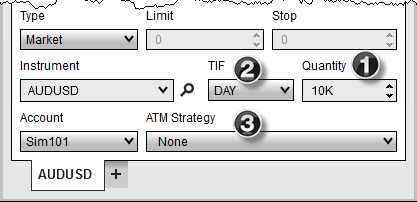
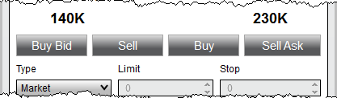
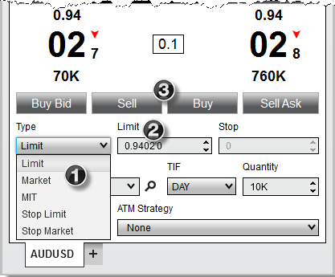
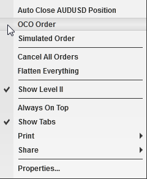
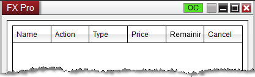
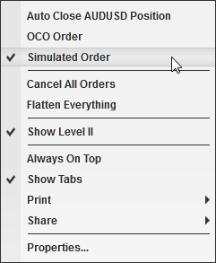
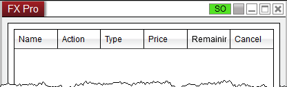

|
<< Click to Display Table of Contents >> Submitting Orders |


|
Submitting Orders
|
<< Click to Display Table of Contents >> Submitting Orders |
|
The FX Pro window is designed for efficient order-entry. In addition to entry and exit orders, the FX Pro window also offers access to NinjaTrader's ATM Strategies. For more information on ATM Strategies, please see the Advanced Trade Management page or attend one of our free live training events.
 Selecting instruments and account
Selecting instruments and account
How to Select an InstrumentThere are multiple ways to select an Instrument in the FX Pro window.
•Select the Instrument Selector to open a list of recently used instruments or instruments contained in a predefined list
•With the FX Pro window selected begin typing the instrument symbol directly on the keyboard. Typing will trigger the Overlay Instrument Selector. For more Information on instrument selection and management please see Instruments section of the Help Guide.
How to Select an AccountA list of all connected accounts will be listed in the "Account" drop down list. To change the account select the account you wish to trade through via this drop down list. |
To Submit an Order1.Set the order "Quantity" field (info) 2.Set the "TIF" (Time in Force) field (info) 3.Set the "ATM Strategy" (info) 4.Enter an order with any of the methods described below  |
 How to submit orders with quick buttons
How to submit orders with quick buttons
Quick ButtonsYou can enter orders rapidly by pressing on any one of the quick order buttons.

|
Custom OrdersYou can place a custom order by setting order parameters.1. Select the order Type2. Set the Limit price if applicable3. Set the Stop price if applicable4. Left mouse click either the BUY or SELL button
|
 Understanding the OCO (One Cancel Other) function
Understanding the OCO (One Cancel Other) function
OCO Orders (One Cancels Other)Stop Loss and Profit Target orders (submitted automatically via an ATM Strategy) are always sent as OCO, however, you can submit entry or exit orders as OCO orders as well. Why? The market may be trading in a channel and you wish to sell at resistance or buy at support, whichever comes first by placing two limit orders at either end of the channel.To place OCO orders, press down on your right mouse button inside the FX Pro window and select the menu name "OCO Order or use the short cut key CTRL+Z.The "OC" (OCO indicator) will light up green at the top of the FX Pro window. All orders placed while this indicator is lit will be part of the same OCO group. Once any order of this group is either filled or cancelled, all other orders that belong to this group will be cancelled.If you want each OCO order to create it's own set of Stop Loss and Profit Target orders ensure that the ATM Strategy control list is set to either <Custom> or a strategy template name before you submit each OCO order.After you have placed your orders, it is advised to disable the OCO function via the right click menu, or use the short cut key CTRL+Z.
Break Out/Fade Entry ExampleOne of the great features of NinjaTrader is its ability to submit two entry orders, one of which will cancel if the other is filled.You can accomplish a breakout/breakdown approach by:•Right clicking in the FX Pro window and selecting the menu item "OCO Order" to enable the OCO function •For your first order, select the desired option from the "ATM Strategy" drop down list •Submit your stop order to buy above the market •For your second order, select the desired option from the "ATM Strategy" drop down list •Submit your stop order to sell below the market •CRITICAL: Right click in the FX Pro window and select the menu item "OCO Order" to disable OCO for future orders. For a market fade approach just substitute limit orders for stop orders. |
 How to submit Simulated Stop Orders (Simulated Order)
How to submit Simulated Stop Orders (Simulated Order)
Simulated Stop Orders (Simulated Order)To submit a Simulated Stop Order (entry and exit NOT Stop Loss; simulated Stop Loss orders are enabled via an ATM stop strategy) you must enable Simulated Order mode via the right mouse click context menu by selecting the Simulated Order menu item..The "SO" (Simulated Order indicator) will light up green at the top of the FX Pro window. All stop orders placed while this indicator is lit will be submitted as a Simulated Stop Orders. |